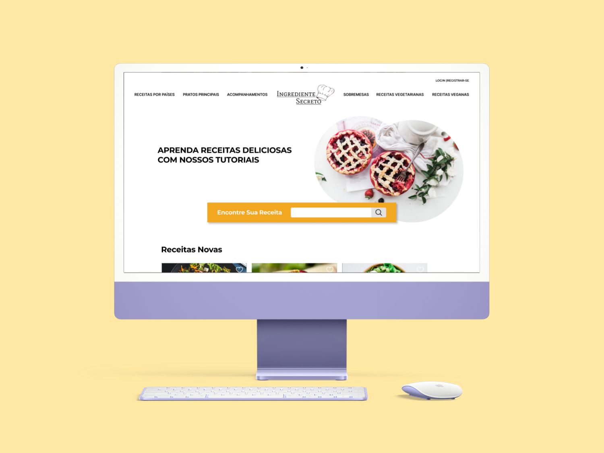

Sempre Primavera
O projeto Ingrediente Secreto é um protótipo de site que foi desenvolvido com o intuito de beneficiar estudantes de gastronomia, donas de casa e amantes da culinária oferecendo tutoriais de receitas de forma simples e didática.